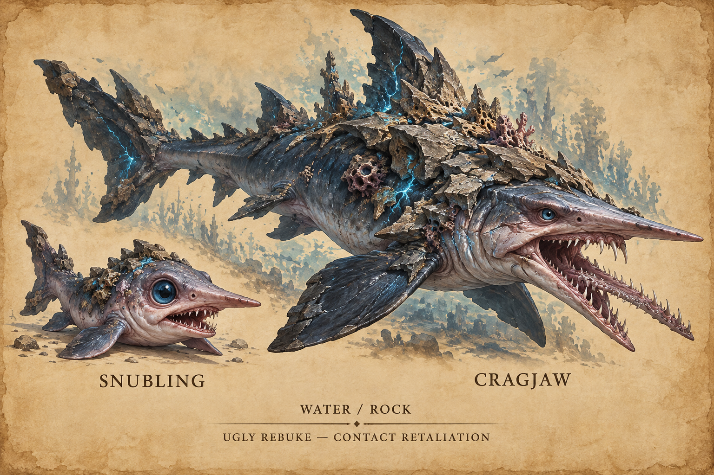
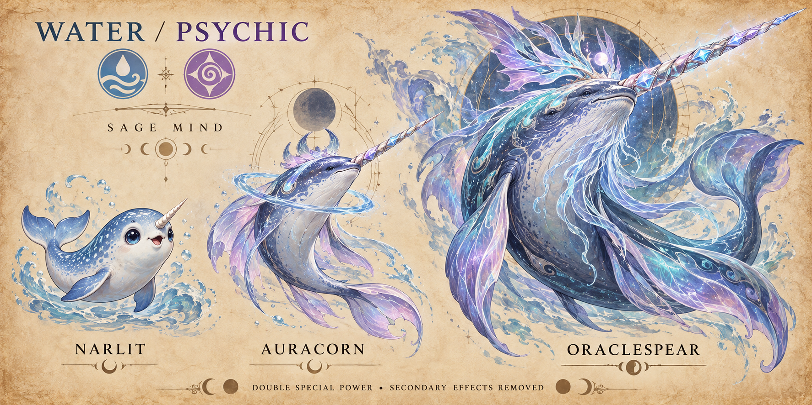
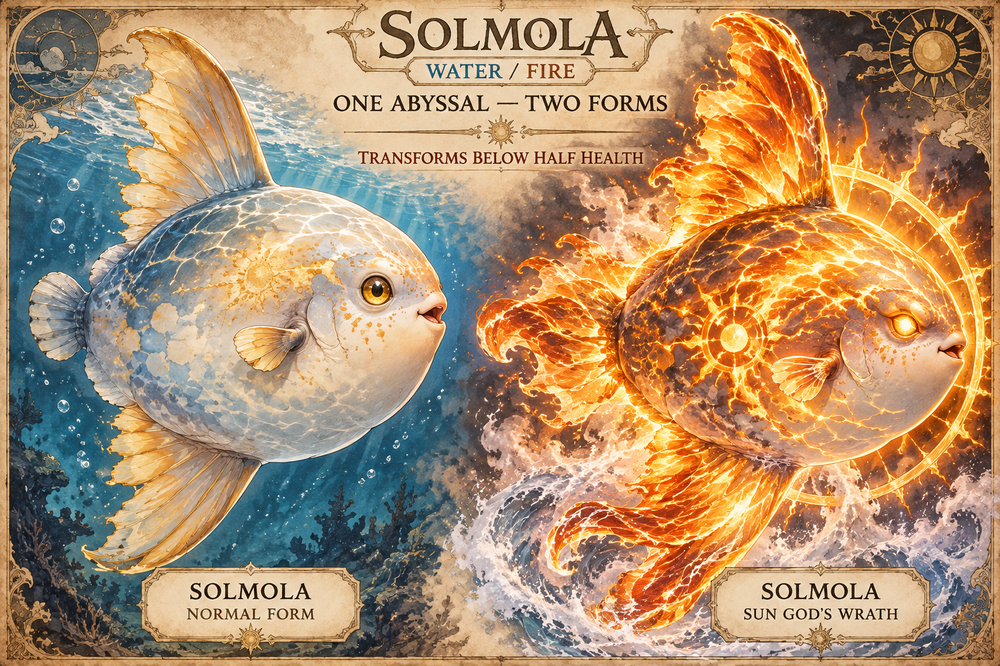
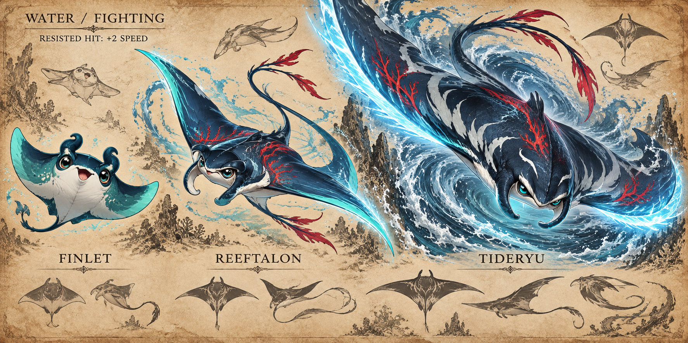
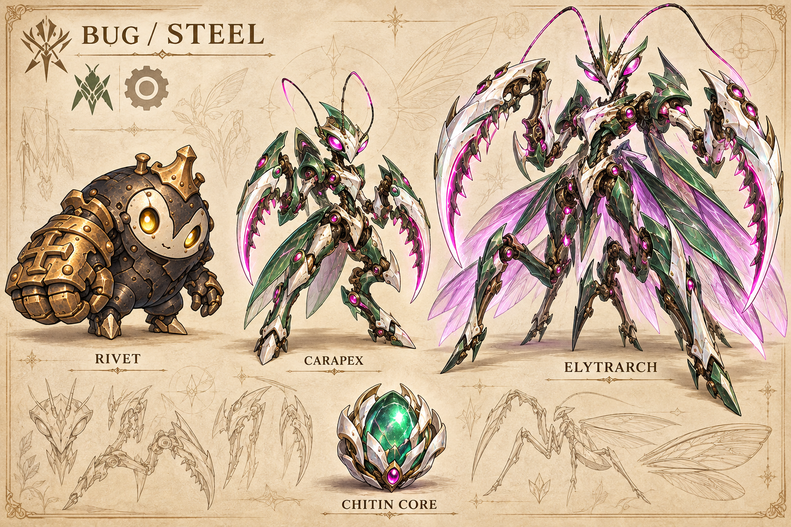

Aquatic redesigns & praying-mantis Rivet
Approved and integrated
Your four aquatic briefs now define these designs. All four aquatic lines are in the playable roster, with rare base forms in the fishing competition and their aquatic habitats. The Sun Fish has two combat forms and no evolution. All four aquatic lines use Special Attack.
Snubling → Cragjaw
Water / Rock · Armoured special counterattacker

A cute, decidedly ugly goblin-shark pup becomes a long-snouted predator with a projecting jaw and jagged stone armour. Both remain sharks, with strong readable eyes.
Evolution: Snubling evolves at Lv. 32. Two stages.
Ability: Ugly Rebuke — contact moves damage the attacker. Proposed retaliation: 1/8 of the attacker’s maximum HP per successful contact hit.
| Stage | HP | Attack | Defence | Sp. Atk | Sp. Def | Speed | Total |
|---|---|---|---|---|---|---|---|
| Snubling | 40% | 10% | 45% | 60% | 30% | 15% | 200% |
| Cragjaw | 65% | 10% | 70% | 90% | 50% | 15% | 300% |
Proposed learnset
- 1 · Foam Lance
- 1 · Stone Burst
- 8 · Crag Guard
- 14 · Undertow Pulse
- 20 · Shard Screen
- 26 · Tide Pulse
- 32 · Gravel Gape (proposed Rock special signature, 90 power)
- 40 · Crag Spire
- 48 · Calm Current
Narlit → Auracorn → Oraclespear
Water / Psychic · Sage special wallbreaker

A round narwhal calf develops flowing psychic fins, then becomes an imposing elder with a crystal spear-tusk, spectral beard and psychic crown.
Evolution: Narlit → Auracorn at Lv. 22; Auracorn → Oraclespear at Lv. 40. Three stages.
Ability: Sage Mind — damaging special attacks have double power and lose secondary effects. Status, flinch and stat-change side effects attached to those attacks are removed; standalone status moves remain available.
| Stage | HP | Attack | Defence | Sp. Atk | Sp. Def | Speed | Total |
|---|---|---|---|---|---|---|---|
| Narlit | 45% | 10% | 30% | 50% | 45% | 20% | 200% |
| Auracorn | 55% | 10% | 40% | 60% | 60% | 25% | 250% |
| Oraclespear | 65% | 10% | 45% | 70% | 75% | 35% | 300% |
Proposed learnset
- 1 · Foam Lance
- 1 · Thought Spark
- 8 · Mind Screen
- 14 · Aura Arc
- 22 · Calm Thought
- 28 · Tide Lance
- 34 · Mind Pulse
- 40 · Oracle Ray (proposed Psychic special signature, 90 power)
- 48 · Tide Spiral
Solmola
Water / Fire · Transforming special bruiser

A broad, flattened ocean sunfish with pale gold fins erupts into a molten solar form. The same face and silhouette remain recognisable beneath its fiery corona.
Evolution: No evolution. Normal form and Sun God’s Wrath form are the same Abyssal.
Ability: Sun God's Wrath — transforms when HP falls below half, with separate artwork and boosts to all stats. Proposed tuning: all six stats ×1.25, including maximum HP while preserving the current HP fraction; one transformation per battle, lasting until that battle ends. Permanent growth is unchanged.
| Stage | HP | Attack | Defence | Sp. Atk | Sp. Def | Speed | Total |
|---|---|---|---|---|---|---|---|
| Solmola | 80% | 10% | 65% | 90% | 45% | 10% | 300% |
Proposed learnset
- 1 · Foam Lance
- 1 · Ember Snap
- 8 · Deep Breath
- 16 · Ash Brand
- 24 · Heat Haze
- 32 · Tide Pulse
- 40 · Solar Flare (proposed Fire special signature, 95 power)
- 48 · Ashen Focus
- 56 · Tide Spiral
Finlet → Reeftalon → Tideryu
Water / Fighting · Resist-and-accelerate special sweeper

A friendly little ray becomes an athletic martial manta, then a sweeping ocean warrior with luminous wing-edge blades. Its body remains aquatic rather than humanoid.
Evolution: Finlet → Reeftalon at Lv. 18; Reeftalon → Tideryu at Lv. 36. Three stages.
Ability: Slipstream Discipline — every successful resisted damaging hit raises Speed by two stages, subject to the normal +6 cap. Neutral, super-effective and immune hits do not trigger it.
| Stage | HP | Attack | Defence | Sp. Atk | Sp. Def | Speed | Total |
|---|---|---|---|---|---|---|---|
| Finlet | 40% | 10% | 35% | 55% | 30% | 30% | 200% |
| Reeftalon | 50% | 10% | 45% | 70% | 35% | 40% | 250% |
| Tideryu | 60% | 10% | 50% | 85% | 45% | 50% | 300% |
Proposed learnset
- 1 · Foam Lance
- 1 · Wake Palm
- 8 · Guarded Breath
- 14 · Undertow Pulse
- 18 · Mist Screen
- 24 · Sapping Spiral
- 30 · Tide Lance
- 36 · Breaker Aura
- 42 · Focus Lance
- 50 · Raincall
Rivet → Carapex → Elytrarch
Bug / Steel · Fast mantis armour striker

The approved bronze Rivet starter stays unchanged. The new armour becomes lean praying-mantis machinery in emerald, pearl white, silver and magenta, with triangular insect faces and jointed grasping scythes. The Chitin Core is an emerald mantis egg-heart held in pale metal claws.
Evolution: Chitin Core on Rivet at Lv. 12+ → Carapex; Carapex → Elytrarch at Lv. 36.
Ability: Warbond — retains the shared Rivet ability: double EXP for all participants, including binocular participants.
| Stage | HP | Attack | Defence | Sp. Atk | Sp. Def | Speed | Total |
|---|---|---|---|---|---|---|---|
| Rivet | 40% | 40% | 40% | 20% | 40% | 30% | 210% |
| Carapex | 45% | 80% | 35% | 10% | 30% | 65% | 265% |
| Elytrarch | 50% | 110% | 40% | 10% | 30% | 90% | 330% |
Proposed learnset
- Carapex · 1 Chitin Cut
- 12 · Silk Guard
- 18 · Iron Cut
- 24 · Chitin Needle
- 30 · Forge Focus
- 36 · Prayer Reap (proposed Bug physical signature, 85 power)
- 42 · Shed Shell
- 48 · Iron Spire
Five new special Fighting moves
These shared moves are added to the existing mixed Fighting families now. The manta line learns these attacks as it develops.
| Move | Power | Accuracy | PP | Effect |
|---|---|---|---|---|
| Wake Palm | 40 | 100 | 25 | Early aura attack |
| Undertow Pulse | 70 | 100 | 15 | Reliable pressure pulse |
| Breaker Aura | 100 | 95 | 10 | Strong finisher |
| Sapping Spiral | 75 | 100 | 10 | Restores 25% of damage dealt |
| Focus Lance | 80 | Always hits | 15 | Ignores accuracy and evasion stages |
Existing recipients: Cindertap / Furnuckle / Pyroclastor; Palmote / Mantrimp; Knollop / Cragrapple; Anvilip / Forgecasque. Each family receives a selection suited to its theme and level progression. Existing partners can learn unlocked additions for free through Aeric’s relearning.